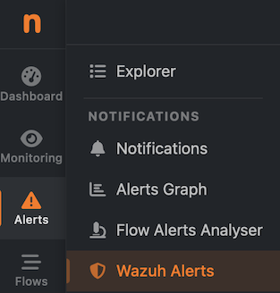
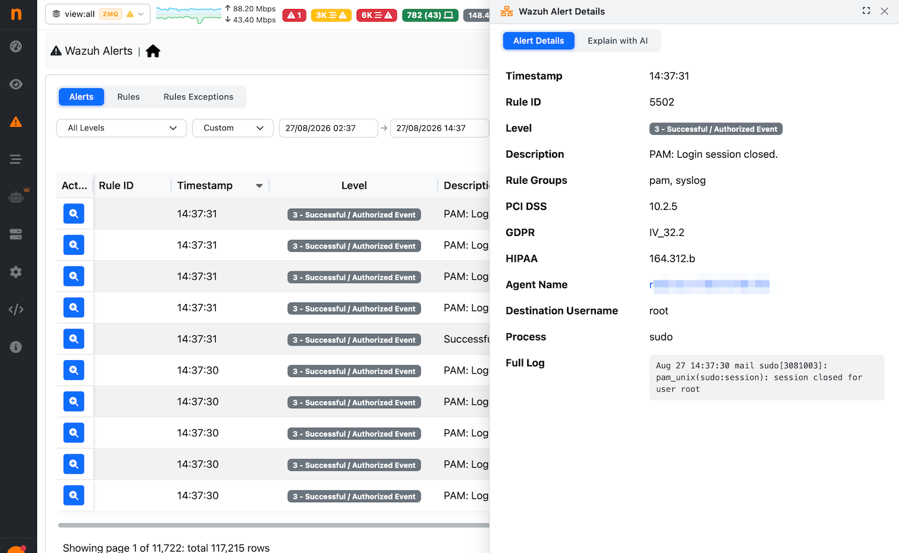
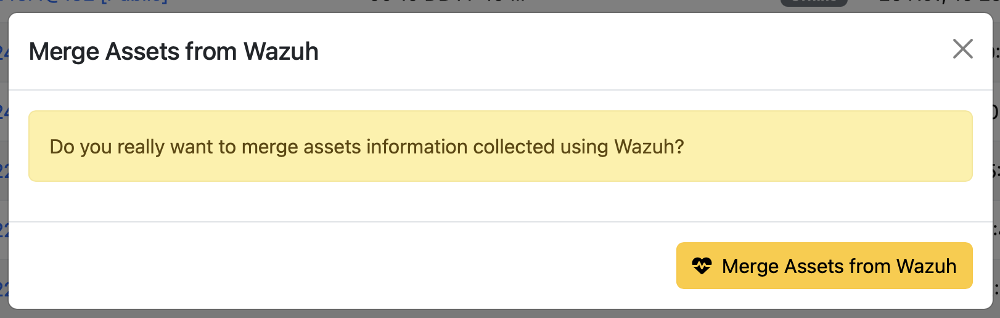
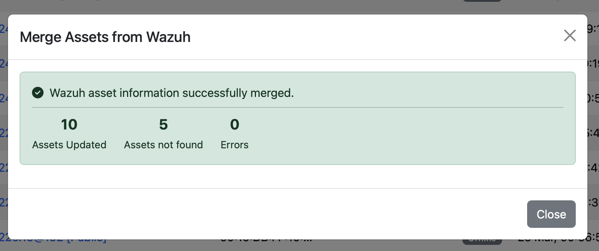

Wazuh Интеграция
ntopng интегрируется с Wazuh, платформа безопасности с открытым исходным кодом, которая обеспечивает обнаружение угроз, мониторинг целостности, реагирование на инциденты и возможности обеспечения соответствия. Эта интеграция обогащает инвентарь активов ntopng за счет объединения информации о безопасности конечных точек, собранной агентами Wazuh, непосредственно с активами хоста ntopng, что дает операторам единое представление как о сетевом трафике, так и о состоянии безопасности хоста. В настоящее время ntopng использует Wazuh как для сбора оповещений, сгенерированных Wazuh, так и для доступа к конечной точке Wazuh для получения информации об известных активах.
Примечание
Чтобы использовать Wazuh, вам необходимо использовать версию Enterprise ntopng и включить ClickHouse для постоянного хранения данных.
Чтобы включить Wazuh вам необходимо
Откройте ntopng и перейдите к Настройки → Настройки → Внешние интеграции → Wazuh
Включите Wazuh и заполните следующие поля:
Wazuh URL-адрес: Базовый URL-адрес Wazuh Менеджера API, включая протокол и порт (например.
https://WAZUH_HOST:55000). Обратите внимание: если доступ к вашему серверу Wazuh осуществляется через https без действующего сертификата (например, самозаверяющего сертификата), вам необходимо запустить ntopng с использованием –insecure.Имя пользователя: учетная запись пользователя Wazuh, которую ntopng будет использовать для аутентификации на API (обычно wazuh-wui)
Пароль: пароль для указанной выше учетной записи.

Wazuh Коллекция оповещений
Менеджер Wazuh собирает необработанные события безопасности и журналы с конечных точек, на которых работает локальный агент wazuh. Эти оповещения полезны для их корреляции с сетевыми событиями, создаваемыми ntopng. Оповещения периодически экспортируются менеджером Wazuh в ntopng через redis с помощью filebeats. Хитрость заключается в том, чтобы экспортировать собранные оповещения Wazuh, хранящиеся в /var/ossec/logs/alerts/alerts.json, и доставить их на удаленный экземпляр ntopng redis через filebeat.
Конфигурация
Вы можете сделать это следующим образом:
Дублируйте службу systemd filebeat и назовите ее. filebeat-ntop
Создайте /etc/filebeat-ntop/filebeat.yml и в разделе filebeat.inputs. https://www.elastic.co/docs/reference/beats/filebeat/configuration-filebeat-options добавить что-то вроде
- type: filestream
id: wazuh-ntop
paths:
- /var/ossec/logs/alerts/alerts.json
output.redis:
hosts: ["ntop.remote.host"]
key: "filebeat"
db: 0
timeout: 5
#output.console:
# pretty: true
seccomp:
default_action: allow syscalls:
- action: allow
names:
- rseq
logging.level: info
logging.to_files: true
logging.files:
path: /var/log/filebeat-ntop
name: filebeat
Обратите внимание:
вам необходимо заменить ntop.remote.host именем хоста или IP-адресом хоста, на котором работает ntopng (и экземпляр redis, используемый ntopng).
порт redis (6379/tcp) должен быть открыт и доступен для хоста-менеджера Wazuh, который должен доставлять оповещения в удаленную очередь.
После этого вы увидите предупреждение Wazuh на левой боковой панели, откуда вы сможете получить доступ к страницам Wazuh.

Во время установки ntop устанавливаются некоторые правила по умолчанию, чтобы иметь готовую конфигурацию.

Вы можете редактировать правило

определяя такие параметры, как
Приоритет: указывается порядок оценки правила (сначала меньший).
Минимальный уровень: правило не влияет на оповещения с уровнем ниже указанного значения.
Группы: если пусто, оно будет применяться ко всем группам оповещений, в противном случае — только к указанным группам оповещений.
Тема: Тема уведомления, которое будет отправлено, если сработает это правило. Обратите внимание, что вы можете указать в теме некоторые подстановочные знаки, которые будут раскрываться во время выполнения.
Немедленно: если установлено оповещение, оно активируется для каждого оповещения, в противном случае оно суммируется с другими оповещениями.
Включено: вы можете временно отключить правило с помощью этого ползунка.
Комментарий: удобочитаемый комментарий к этому правилу. Приоритет: указывается порядок оценки правила (сначала меньший).
Минимальный уровень: правило не влияет на оповещения с уровнем ниже указанного значения.
Группы: если пусто, оно будет применяться ко всем группам оповещений, в противном случае — только к указанным группам оповещений.
Тема: Тема уведомления, которое будет отправлено, если сработает это правило. Обратите внимание, что вы можете указать в теме некоторые подстановочные знаки, которые будут раскрываться во время выполнения.
Немедленно: если установлено оповещение, оно активируется для каждого оповещения, в противном случае оно суммируется с другими оповещениями.
Включено: вы можете временно отключить правило с помощью этого ползунка.
Комментарий: удобочитаемый комментарий к этому правилу.
Наконец, вы можете увидеть список собранных оповещений на главной странице.

Обратите внимание, что на странице настроек ntopng вы можете установить срок хранения оповещений (по умолчанию — один год).
Жизненный цикл оповещений
Каждую минуту ntopng опросы redis на предмет новых входящих оповещений обрабатываются соответствующим образом.
Оповещения постоянно хранятся в базе данных.
Уведомление срабатывает, если правило оповещения соответствует полученному оповещению. На странице оповещений ntopng не создаются оповещения, чтобы избежать дублирования данных.
Чтобы доставлять уведомления удаленным пользователям, вам необходимо настроить Конечную точку и Получателя:
Перейдите в левую строку меню, «Оповещения» -> «Уведомления» и создайте конечную точку.
Затем нажмите «Получатели» и свяжите их с конечной точкой. Убедитесь, что для параметра «Тип уведомления» установлено значение «Wazuh Оповещения».

Wazuh Сбор активов
Wazuh развертывает агенты на контролируемых конечных точках, которые постоянно сообщают о состоянии, сведениях об операционной системе, информации о подключении и событиях безопасности центральному Wazuh Менеджеру. Подключив ntopng к Wazuh Менеджеру REST API, инвентаризация активов может автоматически пополняться этими данными уровня агента.
Процесс слияния сопоставляет Wazuh агентов с ntopng активами на основе их IP-адресов. При обнаружении соответствия актив обновляется метаданными безопасности, полученными из Wazuh, включая статус агента, операционную систему, дату регистрации и временную метку последней активности. Активы, обогащенные данными Wazuh, визуально различимы в инвентаре и могут фильтроваться отдельно от активов без информации Wazuh.
Предварительные условия
Прежде чем включить интеграцию, убедитесь, что выполнены следующие требования:
ntopng Требования:
ntopng с включенной поддержкой инвентаризации активов (Enterprise M или выше).
Сетевое подключение от хоста ntopng к конечной точке Wazuh Менеджера API.
Хост-активы уже присутствуют в инвентаре активов ntopng (интеграция обновляет только существующие активы; новые не создаются)
Wazuh Требования:
Работающий экземпляр Wazuh Manager
Учетная запись пользователя Wazuh с доступом для чтения
/agentsAPI конечная точкаДиспетчер Wazuh API доступен через настроенный порт (по умолчанию:
55000)
Примечание
Интеграция выполняет запрос только для чтения к Wazuh API. Никакие данные не записываются в Wazuh.
Настраивать
Шаг 1: Объедините ресурсы из Wazuh
После сохранения учетных данных вы можете в любой момент запустить слияние из инвентаря активов.
Перейдите к Сеть → Инвентаризация активов
Нажмите кнопку Объединить активы из Wazuh кнопка над таблицей (только для администраторов)
ntopng выполнит аутентификацию у Wazuh Менеджера API, получит полный список зарегистрированных агентов и обновит все соответствующие активы.

Wazuh Проверка слияния
Операция выполняется синхронно и возвращает краткую сводку, показывающую, сколько активов было обновлено, у скольких агентов не было соответствующего актива ntopng и произошли ли какие-либо ошибки.

Wazuh Объединение завершено
Примечание
Обновляются только активы, которые уже существуют в инвентаре ntopng. Wazuh агенты, IP-адрес которых не соответствует ни одному известному ntopng активу, автоматически пропускаются и учитываются в сводке как «не найденные».
Если вы хотите каждую ночь автоматически синхронизировать Wazuh с ntopng, вы можете избежать ручного импорта и установить эту опцию в настройках wazuh.
Шаг 2. Просмотрите расширенные ресурсы
После завершения слияния обогащенные активы можно идентифицировать и проверить двумя способами.
Визуальный индикатор в инвентаре
Активы, которые были успешно дополнены данными Wazuh, отображают значок Вт значок рядом с их именем в таблице инвентаризации активов, благодаря чему их можно сразу узнать с первого взгляда.
Фильтрация по статусу Wazuh
Инвентаризация активов предоставляет специальный фильтр, позволяющий сузить представление до:
Ресурсы с Wazuh информация (объединение выполнено и данные доступны)
Ресурсы без Информация Wazuh (слияние не выполнено или соответствующий агент Wazuh не найден)
Этот фильтр полезен для быстрого определения того, какие конечные точки в вашей сети охвачены мониторингом Wazuh, а какие нет.
Wazuh детальная панель
При нажатии на расширенный актив открывается страница его сведений, где выделен специальный Wazuh отображается раздел. Этот раздел содержит таблицу со следующей информацией, полученной из записи агента Wazuh:
Поле |
Описание |
|---|---|
Статус |
Текущий статус агента, сообщаемый Wazuh (например. |
Версия |
Версия агента Wazuh, установленного на конечной точке. |
Дата добавления (первое посещение) |
Дата и время первой регистрации агента у менеджера Wazuh |
Последнее сохранение активности (последнее посещение) |
Дата и время последнего heartbeat, полученного от агента. |
ОС |
Информация об операционной системе отслеживаемой конечной точки |
Примечание
Поля меток времени хранятся и отображаются в формате UTC в соответствии с rest из ntopng.

Wazuh Информация об агенте
Выше вы можете увидеть пример информации, предоставленной Wazuh, которая включает (но не ограничивается):
Операционная система и архитектура
Доступные ресурсы (память и CPU)
Сетевые интерфейсы
Открыть порты сервера TCP/UDP, включая имя процесса.
Оповещения
Каждый раз, когда выполняется слияние Wazuh, ntopng сравнивает вновь полученные данные агента с ранее сохраненным состоянием для каждого актива и автоматически генерирует информативные оповещения для любого обнаруженного изменения. Эти оповещения отображаются под сетевой интерфейс и помечены IP-адресом затронутого хоста.

Триггеры оповещений
Оповещение генерируется для каждого из следующих событий:
Событие |
Описание |
|---|---|
Новый открытый порт |
Порт TCP или UDP, который ранее не был открыт, теперь сообщается агентом Wazuh как открытый. |
Порт больше не открыт |
Порт TCP или UDP, который ранее был открыт, больше не присутствует в отчете агента. |
Изменен процесс за портом |
Порт по-прежнему открыт, но прослушивающий его процесс (приложение) изменился с момента последнего слияния. |
Добавлен сетевой интерфейс |
На конечной точке появился новый сетевой интерфейс. Виртуальные интерфейсы, имя которых начинается с |
Сетевой интерфейс удален |
Агент больше не сообщает о ранее известном сетевом интерфейсе. Как указано выше, |
Новые активы
Когда агент Wazuh сопоставлен с активом ntopng впервые (т. е. актив не имеет предыдущих данных Wazuh), ntopng рассматривает весь набор полученных данных как новый и генерирует одно оповещение, в котором суммируются все порты, процессы и сетевые интерфейсы, обнаруженные в этой конечной точке. Это обеспечивает немедленное базовое уведомление при регистрации ранее неизвестного хоста.
Формат оповещения
Все оповещения, созданные с помощью Wazuh, имеют следующие свойства:
Серьезность: Информативный
Интерфейс: сетевой интерфейс, где ntopng наблюдает за хостом.
Этикетка: IP-адрес затронутого хоста
Это позволяет легко сопоставлять оповещения с конкретными хостами непосредственно из представления оповещений ntopng, а также фильтровать или агрегировать их по IP-адресам по всему парку.
Поддержание актуальности данных
Интеграция Wazuh не опрашивает Wazuh API непрерывно. Слияние необходимо запускать вручную из инвентаризации активов или планировать каждую ночь с помощью опции автоматической синхронизации в настройках Wazuh.
Поиск неисправностей
Кнопка «Объединить активы из Wazuh» возвращает ошибку.
Убедитесь, что сохраненные URL-адрес Wazuh, имя пользователя и пароль верны.
Убедитесь, что диспетчер Wazuh API доступен с хоста ntopng через настроенный порт.
Убедитесь, что учетная запись пользователя Wazuh имеет разрешение на вызов
/agentsконечная точкаПроверьте журнал ntopng для получения дополнительных сведений об ошибке.
Агенты извлекаются, но активы не обновляются.
Слияние сопоставляет агентов с активами исключительно по IP-адресу. Убедитесь, что IP-адреса, сообщенные агентами Wazuh, соответствуют IP-адресам, уже присутствующим в реестре активов ntopng.
Активы, которые никогда не видел ntopng, не могут быть созданы путем слияния; Чтобы актив существовал в инвентаре, сначала необходимо наблюдать за трафиком
Значок «W» не появляется после слияния
Перезагрузите страницу инвентаризации активов; значок отображается на стороне клиента и может потребовать обновления страницы.
Подтвердите, что в сводке по слиянию указан хотя бы один обновленный объект.
После слияния оповещения не создаются.
Оповещения генерируются только при обнаружении изменения относительно предыдущего слияния. Если это первое слияние, когда-либо выполненное, базовое оповещение создается для каждого нового сопоставленного актива. Если с момента последнего слияния не произошло никаких изменений, оповещения не выдаются.
Убедитесь, что представление предупреждений отфильтровано для отображения правильного сетевого интерфейса, поскольку предупреждения Wazuh связаны с интерфейсом, на котором хост наблюдается с помощью ntopng.